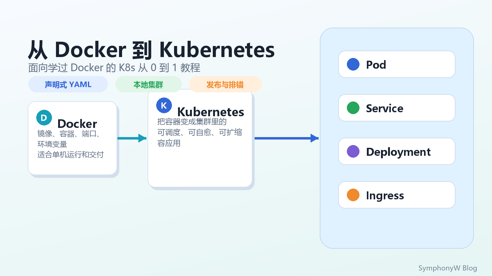
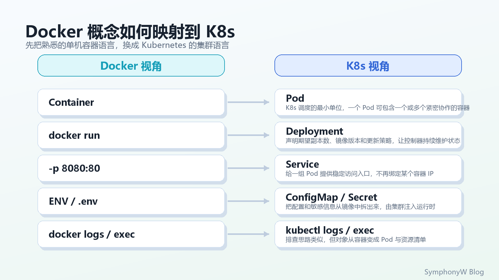
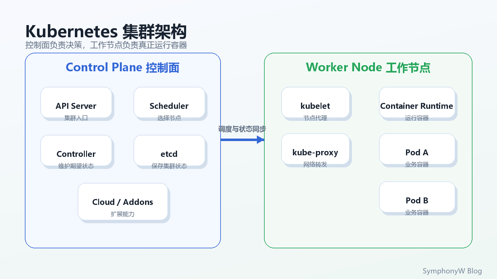
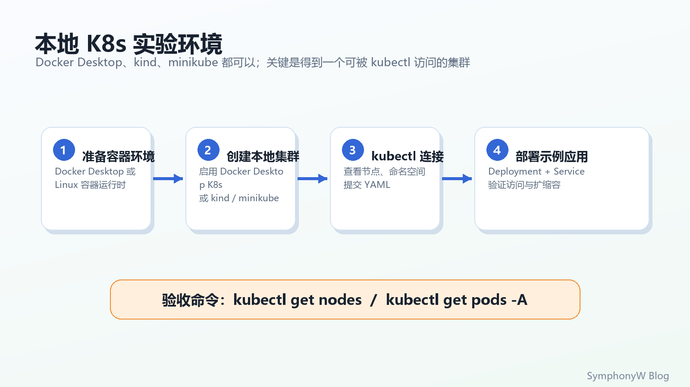
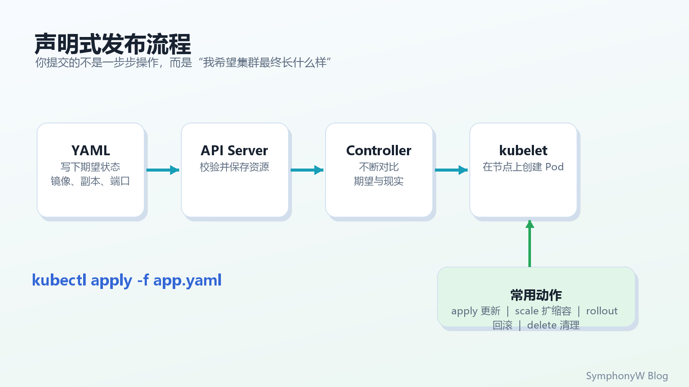
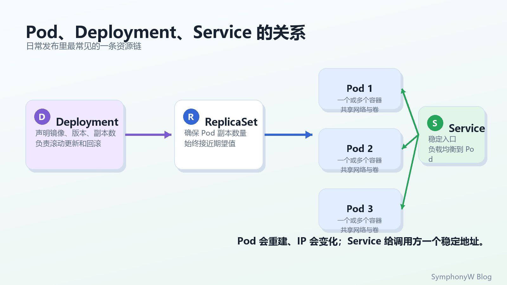
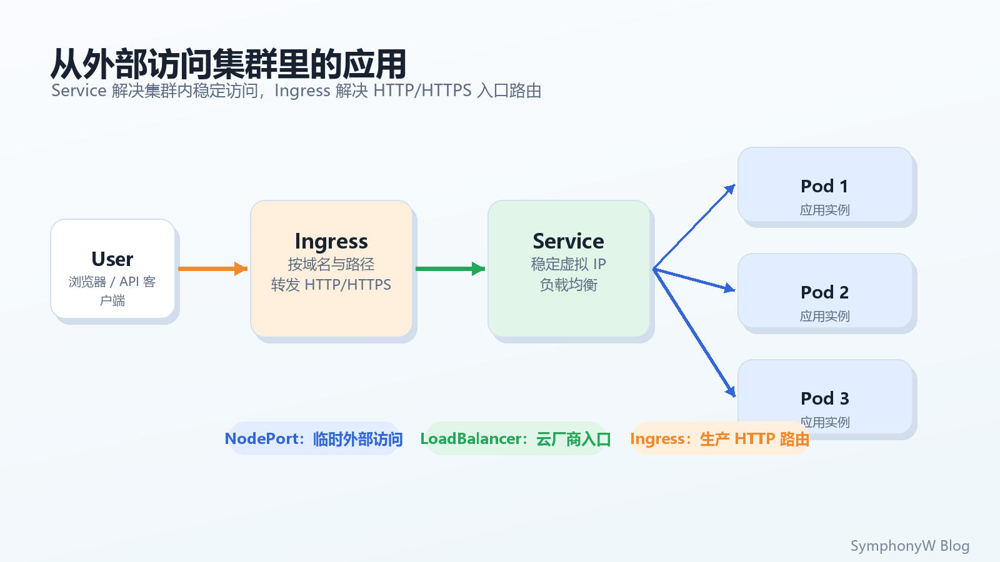
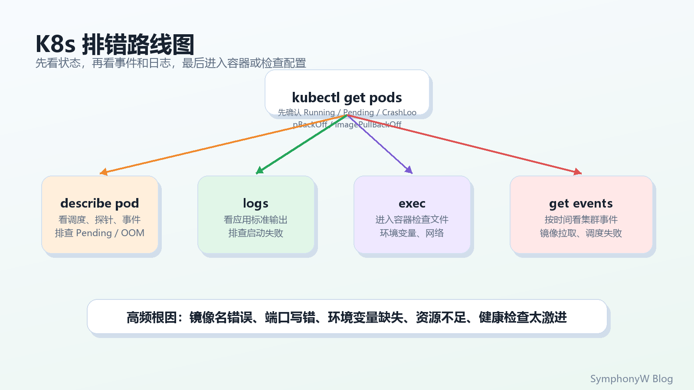

从 Docker 到 Kubernetes：面向 Docker 用户的 K8s 从 0 到 1 教程
你已经学过 Docker，说明你已经知道镜像、容器、端口映射、环境变量和日志这些东西。Kubernetes 的入门难点不在于“又多了几个命令”，而在于它把单机容器运行，升级成了面向集群的声明式应用管理。

从 Docker 到 Kubernetes 的学习路线封面本文会从 Docker 用户最熟悉的视角切入，带你完成一条完整路径：
| 学完后你应该能做到 | 对应能力 |
|---|---|
| 看懂 Pod、Deployment、Service、ConfigMap、Secret、Ingress | 理解 K8s 核心资源 |
| 在本地启动一个 K8s 集群 | 用 Docker Desktop、kind 或 minikube 做实验 |
| 把一个 Nginx 应用部署到集群 | 编写并应用 YAML |
| 暴露服务并在浏览器访问 | 使用 Service、port-forward、Ingress |
| 扩缩容、滚动更新、回滚 | 掌握发布运维基本动作 |
| 排查常见错误 | 用 kubectl describe、logs、exec、events 定位问题 |
本文不追求把 Kubernetes 的所有概念一次塞完。先把主干跑通，再回头补网络、存储、权限、调度和生产治理，学习效率会高很多。
一、先换脑：Docker 管一台机器，K8s 管一组机器
用 Docker 时，你常常是在一台机器上执行：
|
|
这条命令已经包含了很多信息：用什么镜像、叫什么容器、暴露什么端口、传什么环境变量、后台运行。
到了 Kubernetes，思路会变成：
我不直接告诉某台机器“启动这个容器”，我向集群提交一份 YAML，声明“我希望有 3 个副本一直运行，并通过一个稳定服务入口访问”。至于 Pod 放在哪个节点、挂了以后谁重建、更新时怎么替换，交给 Kubernetes 的控制器处理。

Docker 概念如何映射到 K8s可以先用这张表记住最常用的映射：
| Docker 里你熟悉的东西 | Kubernetes 里的对应概念 | 变化点 |
|---|---|---|
| Container | Pod | Pod 是调度最小单位，里面通常放一个主容器 |
docker run |
Deployment | 不只启动一次，而是持续维护期望副本数 |
-p 8080:80 |
Service / Ingress | 容器 IP 会变，访问入口需要抽象出来 |
-e / .env |
ConfigMap / Secret | 配置从镜像里拆出来，由集群注入 |
docker logs |
kubectl logs |
查看 Pod 或 Deployment 的日志 |
docker exec |
kubectl exec |
进入某个 Pod 内部排查 |
| Docker Compose | 多个 K8s YAML 或 Helm Chart | 从本地多容器编排变成集群资源编排 |
一句话总结：Docker 解决“容器怎么打包和运行”，Kubernetes 解决“很多容器如何在集群里持续稳定运行”。
二、K8s 集群到底长什么样
Kubernetes 集群通常由两类角色组成：
| 角色 | 负责什么 | 可以怎么理解 |
|---|---|---|
| Control Plane 控制面 | 接收 API 请求、保存状态、调度 Pod、运行控制器 | 集群的大脑 |
| Worker Node 工作节点 | 真正运行 Pod，维护容器网络和节点状态 | 集群的工人 |

Kubernetes 集群架构你平时敲的 kubectl 并不是直接控制容器，而是向 API Server 发请求。API Server 把你提交的资源写进集群状态，控制器再不断把“实际状态”调整成“期望状态”。
这就是 Kubernetes 最核心的机制：声明式 + 控制循环。
举个例子：
- 你声明
replicas: 3。 - 控制器发现当前只有 2 个 Pod。
- 控制器创建第 3 个 Pod。
- 某个 Pod 挂了，实际状态又变成 2 个。
- 控制器继续补回 3 个。
所以 K8s 不是一个“执行脚本工具”，而是一个持续工作的状态管理系统。
三、准备本地实验环境
如果你已经学过 Docker，大概率已经安装了 Docker Desktop。入门阶段有三条常见路线：
| 方案 | 适合谁 | 特点 |
|---|---|---|
| Docker Desktop 内置 Kubernetes | Windows / macOS 新手 | 图形界面开启，最省事 |
| kind | 已经熟悉 Docker CLI 的人 | 用 Docker 容器模拟 K8s 节点，创建和删除很快 |
| minikube | 想体验更完整本地集群的人 | 插件丰富，文档多，适合学习 |

本地 K8s 实验环境流程无论选择哪种方式，最终目标都一样：让 kubectl 能连上一个可用集群。
|
|
如果能看到节点，说明本地集群已经可用：
|
|
如果你还没有安装工具，建议优先看官方入口：
- kubectl 安装入口：Install and Set Up kubectl
- kind 快速开始：kind Quick Start
- minikube 快速开始：minikube start
本教程后面的命令只依赖通用的 kubectl，不强绑定某个本地集群方案。
四、先用命令跑一个应用
先不用急着写 YAML，先用命令感受一下 Kubernetes 如何运行容器。
|
|
你会看到 Kubernetes 创建了一个 Deployment，并由它管理一个 Pod。
|
|
ClusterIP 只能在集群内部访问。为了在本机浏览器打开它，可以临时做端口转发：
|
|
然后打开：
|
|
你应该能看到 Nginx 欢迎页。
这个过程和 Docker 很像：
| Docker | Kubernetes |
|---|---|
docker run nginx |
kubectl create deployment web --image=nginx |
docker ps |
kubectl get pods |
docker logs <container> |
kubectl logs <pod> |
docker stop <container> |
kubectl delete pod <pod>，但 Deployment 会自动拉起新 Pod |
注意最后一点：如果你直接删除 Pod，它会被自动重建。
|
|
这就是 Deployment 的价值：它关心的是“应该有几个 Pod 活着”，而不是“某个具体 Pod 必须永远活着”。
五、真正入门：用 YAML 声明应用
命令适合体验，真正的 Kubernetes 项目会把资源写成 YAML，和代码一起进 Git。这样才方便审查、回滚、复用和自动化部署。

声明式发布流程新建一个 app.yaml：
|
|
应用它：
|
|
再访问：
|
|
这里有几个字段必须理解：
| 字段 | 作用 |
|---|---|
apiVersion |
资源使用哪个 API 版本 |
kind |
资源类型，比如 Deployment、Service |
metadata.name |
资源名字 |
metadata.namespace |
资源所在命名空间 |
spec |
你期望资源长什么样 |
selector.matchLabels |
Deployment 如何找到自己管理的 Pod |
template.metadata.labels |
Pod 身上的标签 |
replicas |
期望副本数 |
resources.requests |
调度时预留的资源 |
resources.limits |
容器最多能用多少资源 |
readinessProbe |
Pod 是否准备好接流量 |
livenessProbe |
Pod 是否还活着，失败后可重启 |
最容易写错的是 selector 和 labels。Deployment 的 selector.matchLabels 必须匹配 Pod 模板里的 template.metadata.labels，否则 Deployment 找不到自己要管理的 Pod。

Pod、Deployment、Service 的关系日常开发里，你可以先记住这条链：
|
|
六、发布、扩缩容和回滚
Kubernetes 的发布能力主要围绕 Deployment 展开。
查看当前发布状态：
|
|
扩容到 5 个副本：
|
|
缩回 3 个副本：
|
|
更新镜像：
|
|
如果更新后发现有问题，回滚：
|
|
这里的关键点是：Kubernetes 默认会滚动更新。它不会一次性杀掉所有旧 Pod，而是逐步创建新 Pod、等待新 Pod 就绪，再替换旧 Pod。
生产环境里不要随便用 latest 镜像标签。更推荐使用不可变版本号，例如：
|
|
这样你才能知道线上到底跑的是哪一次构建，也方便回滚和审计。
七、配置和密钥：不要把所有东西塞进镜像
在 Docker 里你可能会这样传环境变量：
|
|
在 Kubernetes 里，普通配置通常放 ConfigMap，敏感信息通常放 Secret。
|
|
在 Deployment 里注入：
|
|
完整位置是在容器配置下：
|
|
需要注意：Kubernetes 的 Secret 默认只是做了编码和访问控制，不等于天然加密保险箱。生产环境要结合 RBAC、etcd 加密、外部密钥系统和最小权限一起设计。
八、Service 和 Ingress：应用怎么被访问
Pod 的 IP 会变，不能把 Pod IP 当成长期入口。Service 的作用就是给一组 Pod 一个稳定入口。

从外部访问集群里的应用常见入口方式：
| 方式 | 解决什么问题 | 适合场景 |
|---|---|---|
ClusterIP |
集群内部访问 | 默认方式，服务之间互调 |
NodePort |
从节点端口访问服务 | 本地实验、临时调试 |
LoadBalancer |
云厂商创建外部负载均衡 | 云上生产入口 |
Ingress |
基于域名和路径转发 HTTP/HTTPS | Web 服务生产入口 |
port-forward |
本机临时转发到 Pod 或 Service | 开发调试 |
本地学习最稳的是 port-forward：
|
|
Ingress 需要先安装或启用 Ingress Controller。启用后，一个典型 Ingress 资源长这样：
|
|
可以把 Ingress 理解成集群入口处的 HTTP 路由器。它不是直接替代 Service，而是把外部 HTTP 流量转发到 Service，再由 Service 转到后面的 Pod。
九、排错：先看状态，再看事件和日志
初学 K8s 最常见的挫败感是：YAML 已经 apply 了，但服务就是访问不了。不要靠猜，按固定路线排。

K8s 排错路线图先看资源是否存在：
|
|
看 Pod 详情和事件：
|
|
看日志：
|
|
进入容器：
|
|
按时间查看事件：
|
|
常见状态可以这样判断：
| 状态 | 常见原因 | 优先看什么 |
|---|---|---|
ImagePullBackOff |
镜像名、tag、仓库权限错误 | describe pod 的 Events |
CrashLoopBackOff |
应用启动后反复退出 | logs |
Pending |
没有合适节点、资源不足、PVC 未绑定 | describe pod |
Running 但访问不了 |
Service selector 错、端口错、readiness 未通过 | get svc、describe endpoints |
OOMKilled |
内存超过 limit | describe pod、资源配置 |
一个非常实用的检查顺序：
|
|
如果你在 Docker 里已经习惯了 logs 和 exec，K8s 排错并不陌生，只是目标对象从“容器”变成了“Pod 和资源清单”。
十、从能跑到能用：下一步学什么
学完本文，你已经有了 Kubernetes 的主干认知。后面建议按这个顺序补：
| 阶段 | 重点 | 为什么先学它 |
|---|---|---|
| 基础资源 | Pod、Deployment、Service、ConfigMap、Secret、Namespace | 每天都会用 |
| 发布能力 | RollingUpdate、Rollback、健康检查、资源限制 | 直接影响稳定性 |
| 网络入口 | Service、Ingress、DNS、NetworkPolicy | 解决服务访问和隔离 |
| 存储 | Volume、PVC、StorageClass | 有状态应用必需 |
| 权限 | ServiceAccount、Role、RoleBinding、RBAC | 多人和生产集群必需 |
| 包管理 | Kustomize、Helm | 管理复杂 YAML |
| 运维观测 | Metrics、日志、Tracing、告警 | 线上排障必需 |
最后清理实验环境：
|
|
如果你用 kind 或 minikube 创建了专门的本地集群，可以继续删除集群：
|
|
Kubernetes 入门时不要急着背所有资源。先记住这条线：
|
|
这条线跑通了，你就已经从“会用 Docker 跑容器”，走到了“会用 Kubernetes 管应用”的门口。